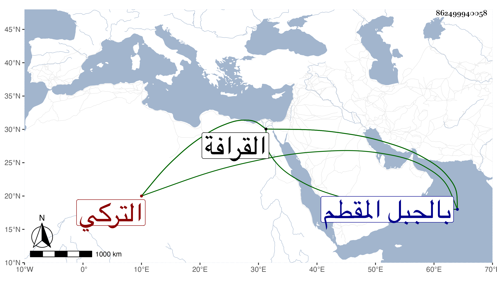

0902Sakhawi.DawLamic.ITO20230111-ara1.EIS1600.862499940058
Biography ID: 862499940058
857
علي بن عبد الله التركي نزيل القرافة بالجبل المقطم وليس عبد الله باسم أبيه فقد بيض المقريزي في عقوده له ويستأنس له بكونه كان من مماليك السلطنة . قال شيخنا في إنبائه : كان للناس فيه اعتقاد كبير وتحكى عنه كرامات وكانت شفاعته لا ترد . مات في ربيع الأول سنة أربع وثمانين ، بل يقال إنه بلغ التسعين وذكر لي أنه كان يذكر ما يدل على أن عمره أربع وثمانون سنة وقد زرته وأنا صغير وسمعت كلامه ودعا لي ولكني لا أتذكر أنني زرته وأنا كبير فالله أعلم ، كان أبوه من المماليك السلطانية فنشأ هو في بيت الملك الناصر محمد بن قلاوون الكبير فلما كبر خرجت في وجهه قوبا فتألم وعالجها فلم ينجع فيها دواء فوجد شيخا يقال له عمر المغربي فطلب منه الدعاء فاستدعاه ولحس القوبا بلسانه فشفاه الله سريعا فاعتقده ورمى الجندية وتبع الشيخ المشار إليه وسلك على يديه وانقطع إلى الله مع كونه لم يترك زي الجند ولا أخذ في يده سبحة ولا لبس مرقعة بل كان مقتصدا في مأكله وملبسه وكلما يفتح به عليه يتصدق به ويؤثر غيره ، وكان يقول : ما رأيت أورع من الشيخ عمر ولا أخيب من الناصر وأعرف الناس من أيام الناصر وما رأيت لهم عناية بأمر الدين ولكن كان فيهم حياء وحشمة تصدهم عن أمور كثيرة صارت بيد رئيس الرؤساء الآن ، قال شيخنا بعد حكاية هذا : فكيف لو أدرك زماننا هذا وأقول فكيف لو أدرك زماننا هذا ، وكان يقول أيضا : إني أعرف من عباد الله من أذن له من أكثر من أربعين سنة أن يأكل من الغيب أو ينفق من الغيب فلم يفعل ، ومما حكاه صاحب الترجمة أنه مشى مع شيخه عمر لزيارة القرافة في وقت القائلة فكان لا يمشي إلا في الشمس ولا يستظل فقلت له في ذلك فقال أن القرافة مقبرة للمسلمين لا تملك ولا يحاز منها موضع فهذه الترب قد وضعت بغير حق فكيف يحل الاستظلال بها .
